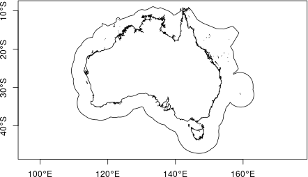
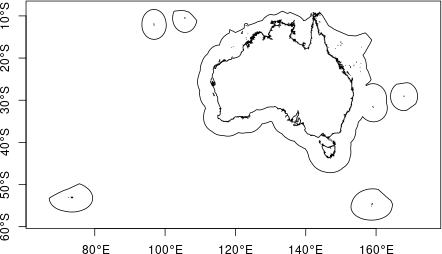
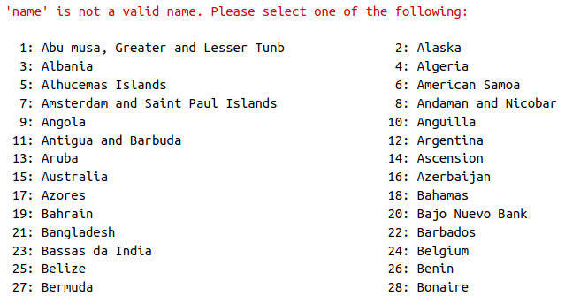
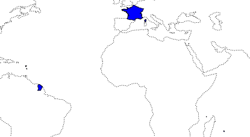
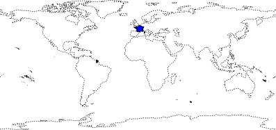

Retrieving boundaries with get_boundary()
getboundary.Rmdget_boundary() can be used to retrieve a variety of
marine and terrestrial boundary types. Details on the options are in the
help file ?get_boundary(), but figuring out exactly how to
get a particular type of boundary can still be confusing. Here we
provide some examples.
Marine boundaries
get_boundary() uses the
mregions2::mrp_get() function from the mregions2
package - the R package for the Marine Regions database. This database
is quite extensive and has several options for querying areas.
get_boundary() is not intended to provide all the
functionality of mregions2, just a slightly simpler
interface for getting commonly used boundaries such as exclusive
economic zones (EEZs), global ocean boundaries, and high seas areas.
When using get_boundary() with
type = "eez", type = "12nm" or
type = "24nm", the country_type can be either
country_type = "country" or
country_type = "sovereign". Using "country"
returns only the EEZ, 12nm or 24nm boundary of the mainland country,
while using "sovereign" returns boundaries for all the
states and territories that a country has sovereignty over as well. The
examples below show how this works.
Note that if type = "ocean" or
type = "high_seas", country_type is
ignored.
Here is a simple query to get Australia’s EEZ:
aus_eez <- get_boundary(name = "Australia", type = "eez")
plot(aus_eez["geometry"], axes = TRUE)
But lets look at what happens if we change the
country_type from the default "country" to
"sovereign":
aus_eez_sov <- get_boundary(name = "Australia", type = "eez", country_type = "sovereign")
plot(aus_eez_sov["geometry"], axes = TRUE)
We now get not just the main country of Australia, but all the
islands it has sovereignty over. For more detail, see the Marine Regions
attribute table; using country_type = "country" queries
using the ‘territory1’ attribute, and using
country_type = "sovereign" uses the ‘territory1’
attribute.
Here is another example using France. Only the EEZ bordering mainland
France is retrieved if country_type = "country", but
setting country_type = "sovereign" we also get all the
islands France has sovereignty over.
fr_eez <- get_boundary(name = "France", type = "eez", country_type = "country")
fr_eez_sov <- get_boundary(name = "France", type = "eez", country_type = "sovereign")
plot(sf::st_geometry(fr_eez_sov), lwd = 1, axes = TRUE)
plot(fr_eez["geometry"], col = "royalblue", add = T)
plot(rnaturalearth::ne_coastline(scale = 110)["geometry"], lty = 3, add = TRUE)EEZ of mainland France (blue) and all overseas territories (solid outlines). World coastlines are shown as dashed line for reference.
An example, where you might want to use sovereign is
when you are trying to get all the islands that make up Kiribati. Using
country_type = "country" does not return anything because
each island group is listed as a country. Note that if the
name provided is not found, a list of all possible
country_type options to chose from is provided (only part
of the output is shown for brevity):
get_boundary(name = "Kiribati", type = "eez", country_type = "country")
Try again, setting country_type = "sovereign":
kir_eez <- get_boundary(name = "Kiribati", type = "eez", country_type = "sovereign")
plot(sf::st_geometry(kir_eez), col = "royalblue")
plot(rnaturalearth::ne_coastline(scale = 110)["geometry"], lty = 3, add = TRUE)Kiribati’s EEZ. World coastlines are shown as dashed line for reference.
The mregions2 package can be used to query many
different marine boundaries, not all of which are included as options
for get_boundary():
| title | layer |
|---|---|
| Exclusive Economic Zones (200 NM) (v11, world, 2019) | eez |
| Maritime Boundaries (v11, world, 2019) | eez_boundaries |
| Territorial Seas (12 NM) (v3, world, 2019) | eez_12nm |
| Contiguous Zones (24 NM) (v3, world, 2019) | eez_24nm |
| Internal Waters (v3, world, 2019) | eez_internal_waters |
| Archipelagic Waters (v3, world, 2019) | eez_archipelagic_waters |
| High Seas (v1, world, 2020) | high_seas |
| Extended Continental Shelves (v01, world, 2022) | ecs |
| Extended Continental Shelves - boundaries (v01, world, 2022) | ecs_boundaries |
| IHO Sea Areas (v3) | iho |
| Global Oceans and Seas (v1) | goas |
| The intersect of the Exclusive Economic Zones and IHO areas (v4) | eez_iho |
| Marine and land zones: the union of world country boundaries and EEZ’s | eez_land |
| Global Biogeochemical Provinces (Longhurst) | longhurst |
| Global contourite distribution | cds |
| Emission Control Areas (ECAs) designated under regulation 13 of MARPOL Annex VI (NOx emission control) | eca_reg13_nox |
| Emission Control Areas (ECAs) designated under regulation 14 of MARPOL Annex VI (SOx and particulate matter emission control) | eca_reg14_sox_pm |
| UNESCO World Heritage Marine Sites (v02, 2023) | worldheritagemarineprogramme |
| The 66 Large Marine Ecosystems of the World | lme |
| Marine Ecoregions of the World - Ecoregions | ecoregions |
| SeaVoX - Sea Areas Polygons (v18, 2021) | seavox_v18 |
Land boundaries
get_boundary() uses the
rnaturalearth::ne_countries() function from the
[rnaturalearth``](https://docs.ropensci.org/rnaturalearth/index.html) package to retrieve land boundaries.get_boundary()`
is only intended to provide a slightly simpler interface for getting
some commonly used land boundaries.
As with maritime boundaries, the country_type can be
specified as either country_type = "country" or
country_type = "sovereign" depending on whether only the
main country is required or the country and all territories/ states it
has sovereignty over. The following examples show how these options work
in practice.
The rnaturalearth package vignette
contains more details about what constitutes a country and more options
for querying.
If we query France setting country_type = "country" we
get:
france <- get_boundary(name = "France", type = "country", country_type = "country")
plot(sf::st_geometry(france), col = "blue")
plot(rnaturalearth::ne_coastline(scale = 110)["geometry"], lty = 3, add = TRUE)
This is slightly unexpected perhaps, but the islands of Guadeloupe and Martinique in the Caribbean, Mayotte and Réunion in the Western Indian Ocean, and French Guiana in South America, all have the same status as mainland France.
If we use country_type = "sovereign", we also get
France’s overseas territories in the Pacific, Atlantic and
Antarctic:
france_sov <- get_boundary(name = "France", type = "country", country_type = "sovereign")
plot(sf::st_geometry(france_sov), col = "blue")
plot(rnaturalearth::ne_coastline(scale = 110)["geometry"], lty = 3, add = TRUE)